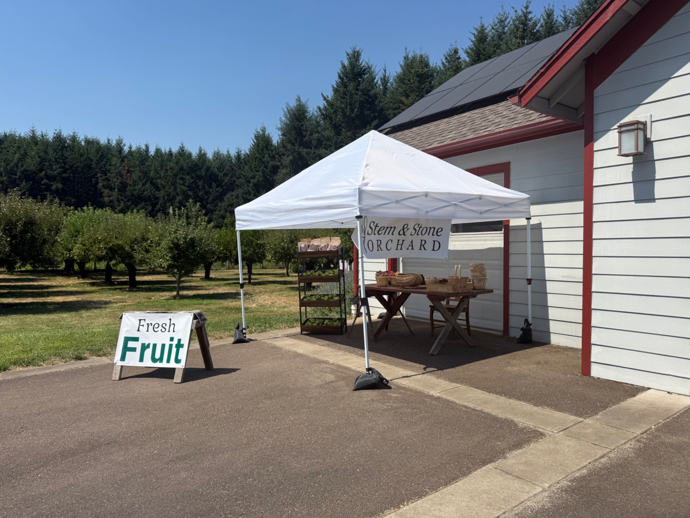

Come see us
Visit the orchard
A pleasant country drive just a few minutes south of downtown Corvallis.
Hours and location
Tuesday–Sunday
9:00 a.m.–1:00 p.m.
2298 SE Kiger Island Dr.
Corvallis, OR 97333
Right across from Kiger Island Blues.
Before you visit
- Fresh fruit availability changes throughout the season.
- Current harvest and pricing are posted on the homepage.
- Follow Facebook or Instagram for timely harvest updates.

Look for the white canopy
The fruit stand sits beside the white building with red trim, with the orchard stretching out behind it. We look forward to welcoming you.